Top Places to Visit in Switzerland
1. Zurich
Overview: Zurich is Switzerland's largest city and a global financial hub. It offers a perfect blend of urban sophistication and natural beauty, with its well-preserved Old Town, vibrant cultural scene, and stunning lakefront location.
Top Attractions: Bahnhofstrasse, Lake Zurich promenade, Old Town (Altstadt), Swiss National Museum, Kunsthaus Zurich, Lindenhof viewpoint, Niederdorf district.
Entry Fees: Swiss National Museum: CHF 10. Kunsthaus: CHF 16.
Best Time to Visit: April-October for pleasant weather; December for Christmas markets.
Photography Spots: Lindenhofplatz (panoramic Old Town views), Lake Zurich at sunset, Grossmunster church towers.
Travel Tips: Free walking tours start from Zurich main station daily. Zurich Card offers free public transport.
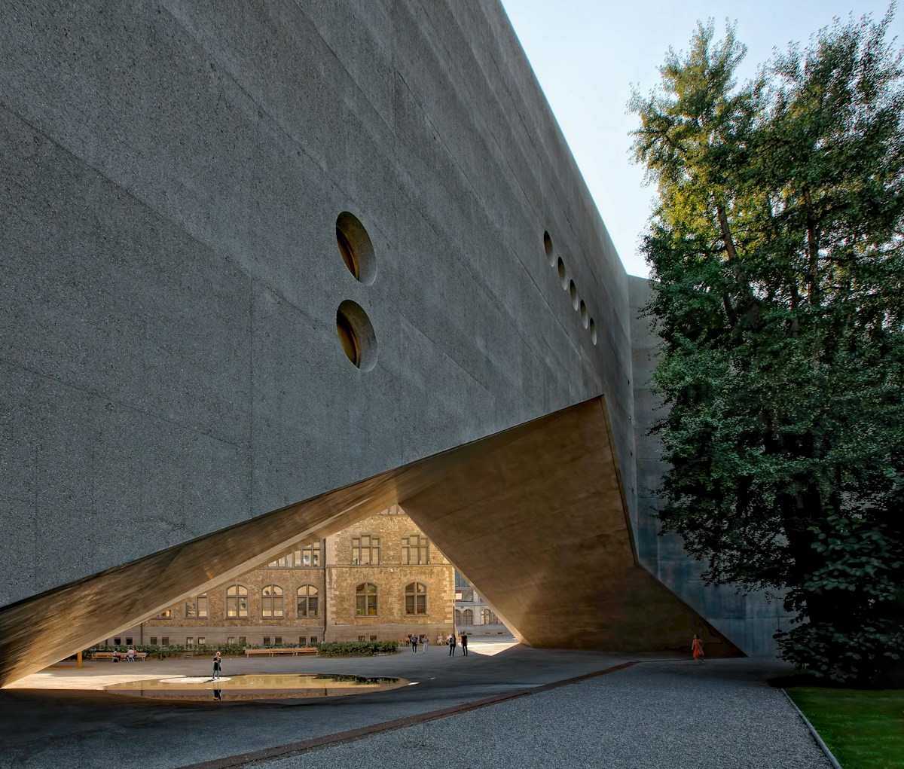
2. Lucerne
Overview: Lucerne is a picture-perfect city on the shores of Lake Lucerne with a backdrop of snow-capped mountains.
Top Attractions: Chapel Bridge, Lion Monument, Lake Lucerne boat cruises, Museggmauer, Swiss Transport Museum, Mount Pilatus, Mount Rigi.
Entry Fees: Swiss Transport Museum: CHF 32. Mount Pilatus Golden Round Trip: CHF 72 (half with Swiss Travel Pass).
Best Time to Visit: May-September for lake cruises; December for Christmas markets.
Photography Spots: Chapel Bridge at sunset, Lion Monument, Museggmauer towers.
Travel Tips: The Golden Round Trip to Mount Pilatus is a must-do.
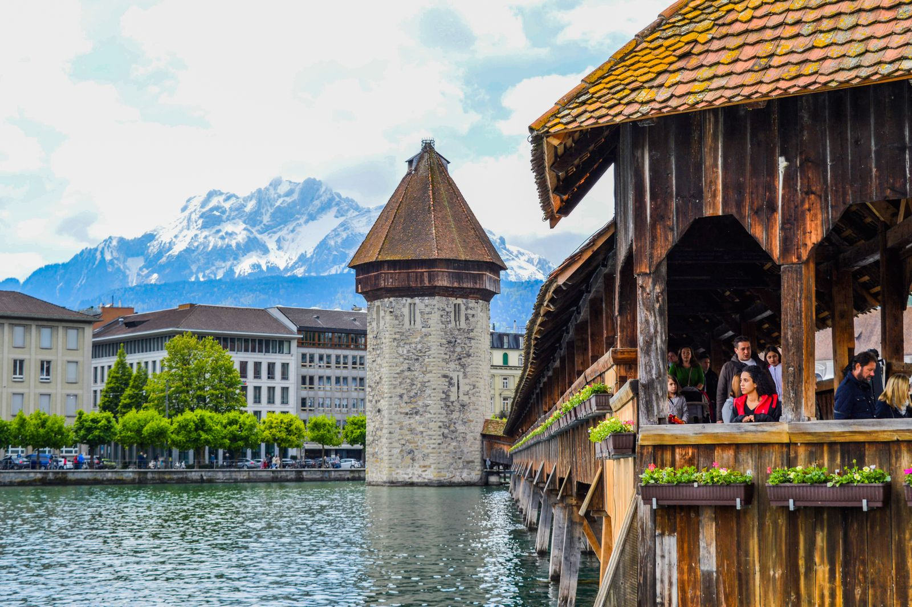
3. Interlaken
Overview: Interlaken is the adventure capital of Switzerland, situated between Lake Thun and Lake Brienz. It serves as the gateway to the Jungfrau region.
Top Attractions: Hoheweg promenade, Harder Kulm viewpoint, Jungfraujoch, Schilthorn, paragliding, skydiving, lake cruises.
Entry Fees: Harder Kulm funicular: CHF 32. Paragliding: CHF 180-250.
Best Time to Visit: June-September for outdoor activities; December-March for winter sports.
Photography Spots: Hoheweg (mountain views), Harder Kulm viewpoint, Unterseen Old Town.
Travel Tips: Buy Jungfrau Travel Pass for unlimited travel in the region.
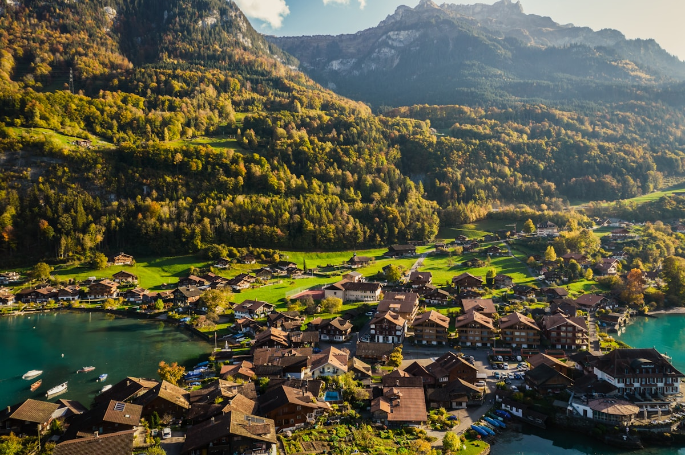
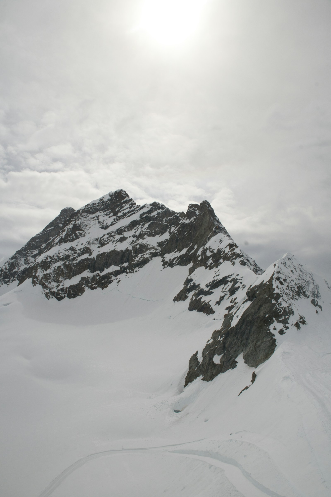
4. Jungfraujoch - Top of Europe
Overview: Jungfraujoch is Europe's highest railway station at 3,454 meters. The journey via cogwheel train is spectacular, and the views from the top are unforgettable.
Top Attractions: Sphinx Observatory, Ice Palace, Aletsch Glacier viewpoint, Alpine Sensation, Lindt Swiss Chocolate Heaven.
Entry Fees: Round trip from Interlaken: CHF 235-260 (CHF 176 with Swiss Travel Pass 25% discount).
Best Time to Visit: Year-round. Summer offers clearer views.
Photography Spots: Sphinx Observatory (360-degree Alpine panorama), Aletsch Glacier.
Travel Tips: Arrive early to avoid crowds. Dress warmly (temperature at top is -5 to -15°C).
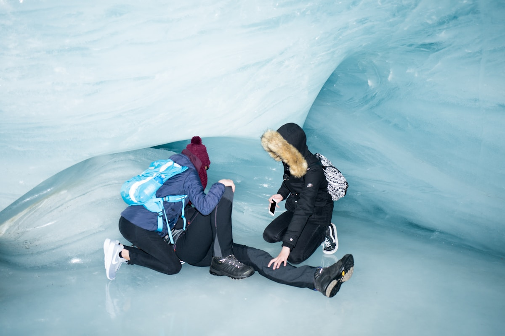
5. Grindelwald
Overview: Grindelwald is a charming Alpine village surrounded by the famous Eiger North Face. It offers world-class hiking, skiing, and outdoor activities.
Top Attractions: First Cliff Walk, Grindelwald-First gondola, Pfingstegg, Eiger Trail, Gletscherschlucht (glacier gorge).
Entry Fees: First gondola: CHF 60. First Cliff Walk: free with gondola ticket.
Best Time to Visit: June-September for hiking; December-March for skiing.
Photography Spots: First Cliff Walk, Gletscherschlucht, Eiger North Face.
Travel Tips: The First Flieger zip line and Trottibike scooter rides are popular summer activities.
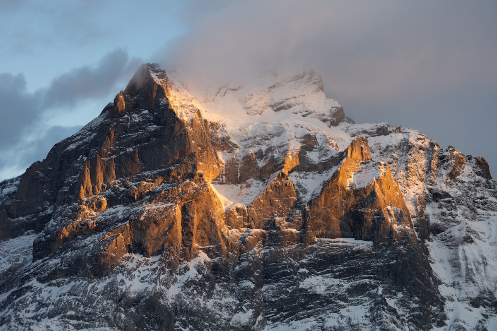
6. Lauterbrunnen
Overview: Lauterbrunnen is the valley of 72 waterfalls, one of the most picturesque spots in Switzerland. The dramatic cliffs inspired J.R.R. Tolkien's Rivendell.
Top Attractions: Staubbach Falls, Trummelbach Falls (glacier waterfalls inside the mountain), Schilthorn, Murren village.
Entry Fees: Trummelbach Falls: CHF 11. Schilthorn cable car: CHF 100.
Best Time to Visit: June-September for waterfalls at full flow.
Photography Spots: Staubbach Falls, Murren village with Jungfrau backdrop.
Travel Tips: Visit Trummelbach Falls early in the day.
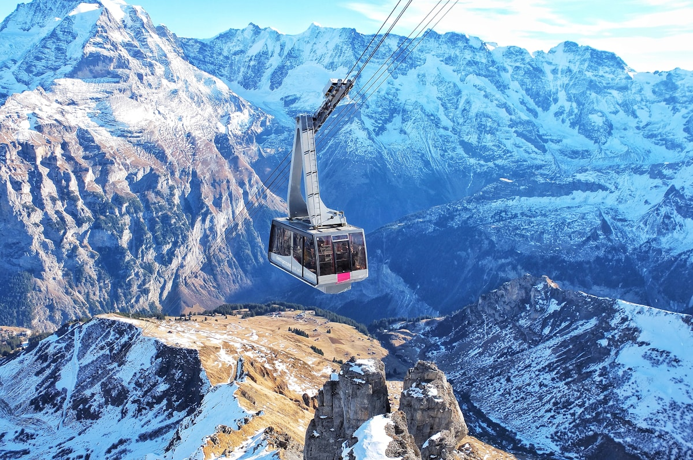
7. Zermatt
Overview: Zermatt is a world-famous Alpine resort at the foot of the iconic Matterhorn mountain. The car-free village offers exceptional skiing, hiking, and mountaineering.
Top Attractions: Matterhorn, Gornergrat Railway, Matterhorn Glacier Paradise (3,883m), Schwarzsee, Zermatt Old Village, Matterhorn Museum.
Entry Fees: Gornergrat Railway: CHF 96. Matterhorn Glacier Paradise: CHF 100.
Best Time to Visit: June-September for hiking; November-April for skiing.
Photography Spots: Gornergrat (classic Matterhorn photo), Riffelsee (Matterhorn reflection).
Travel Tips: Zermatt is car-free - park in Tasch and take the shuttle train. The Matterhorn is best photographed at sunrise from Gornergrat.
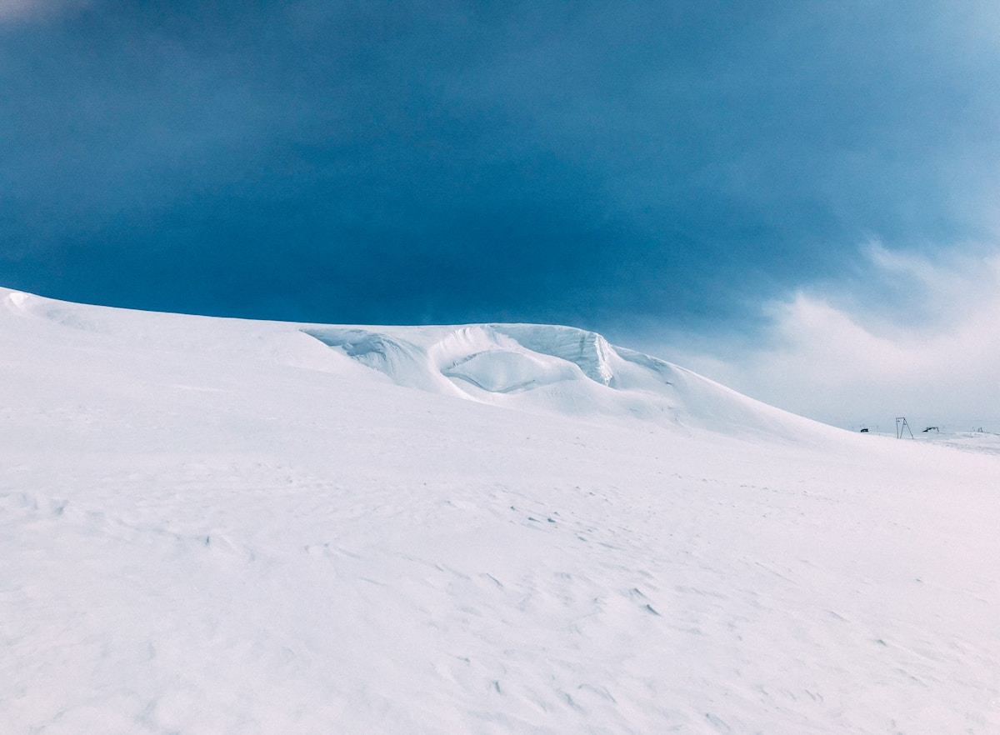
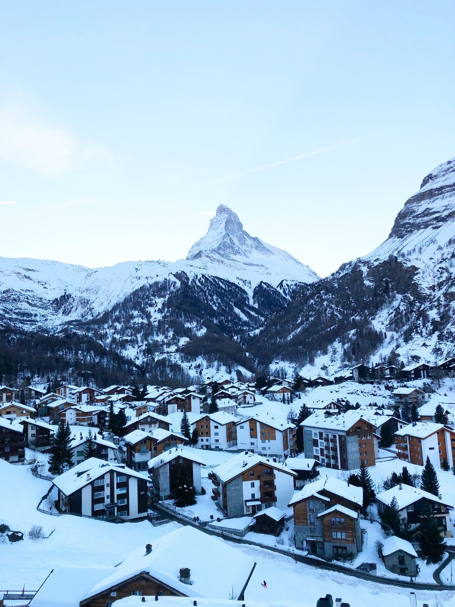
8. Geneva
Overview: Geneva is an international city on the shores of Lake Geneva, home to the United Nations and numerous international organizations.
Top Attractions: Jet d'Eau fountain, United Nations Office, Old Town, St. Pierre Cathedral, Flower Clock, Lake Geneva cruises, CERN.
Entry Fees: UN tour: CHF 13. St. Pierre Cathedral tower: CHF 5. CERN: free.
Best Time to Visit: May-September for lake activities; December for Christmas markets.
Photography Spots: Jet d'Eau at sunset, Old Town from St. Pierre Cathedral tower, Jardin Anglais.
Travel Tips: Geneva is more expensive than other Swiss cities. Free walking tours available. Geneva Pass offers free attractions.
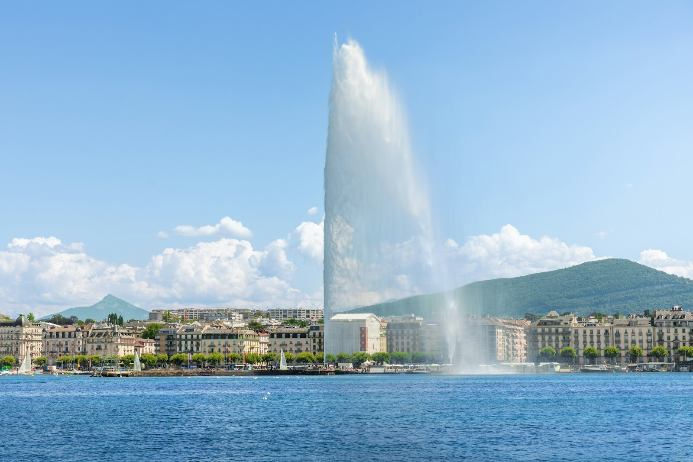
9. Bern
Overview: Bern, the capital of Switzerland, is a UNESCO World Heritage site with its well-preserved medieval Old Town. Famous for arcaded walkways, Zytglogge clock tower, and bears.
Top Attractions: Zytglogge (clock tower), Bern Cathedral, Bear Park, Einstein House, Federal Palace, Rosengarten viewpoint.
Entry Fees: Einstein House: CHF 6. Zytglogge tour: CHF 18. Bear Park: free.
Best Time to Visit: April-October for pleasant weather and outdoor cafes.
Photography Spots: Rosengarten (panoramic Old Town view), Nydeggbrucke (Aare river bend).
Travel Tips: Free walking tours available. Don't miss the bears at Bear Park.
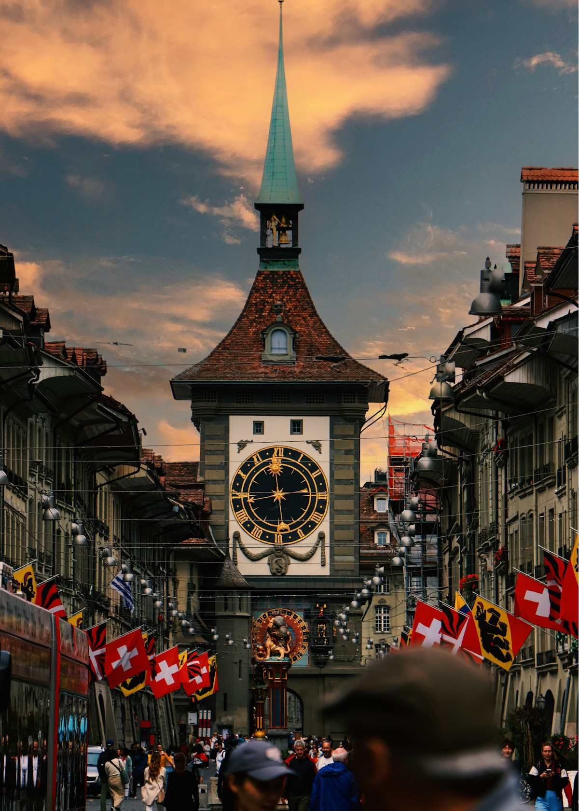
10. Montreux
Overview: Montreux is a beautiful resort town on Lake Geneva, famous for the Montreux Jazz Festival and Chillon Castle.
Top Attractions: Chillon Castle, Montreux lakeside promenade, Montreux Jazz Festival (July), Queen Studio Experience, Rochers-de-Naye mountain, Lavaux Vineyard Terraces.
Entry Fees: Chillon Castle: CHF 12 (free with Swiss Travel Pass). Rochers-de-Naye train: CHF 64.
Best Time to Visit: May-September for lake activities; July for the Jazz Festival.
Photography Spots: Chillon Castle from the lakefront, Queen statue, Lavaux vineyards at sunset.
Travel Tips: The Montreux Jazz Festival books out hotels months in advance. Lavaux vineyards are a UNESCO World Heritage site.
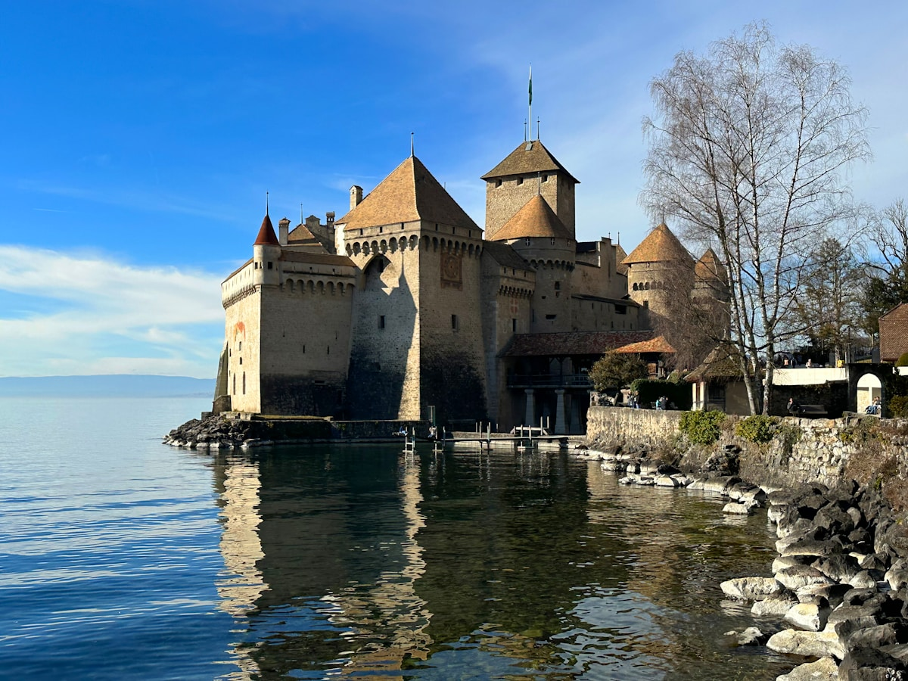
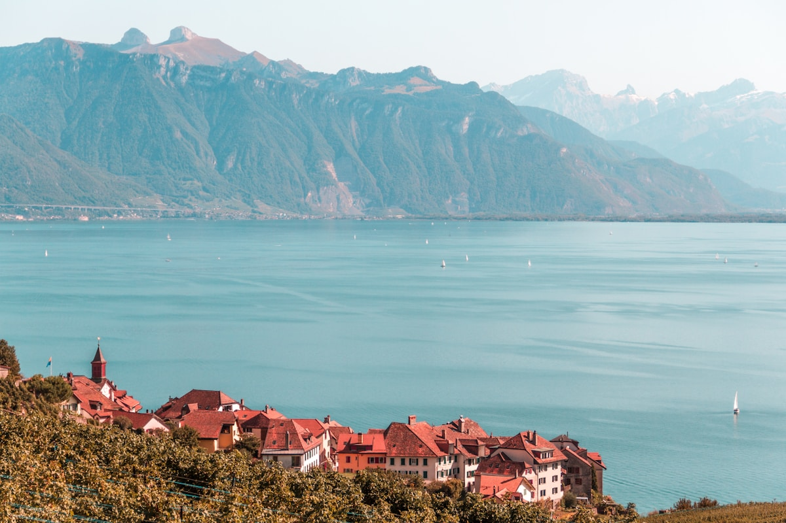
11. Rhine Falls
Overview: Rhine Falls near Schaffhausen is Europe's largest waterfall. The 23-meter high falls offer a spectacular display of natural power, especially in summer when the water flow peaks.
Top Attractions: Rhine Falls boat tours, Schlössli Wörth castle, waterfall viewing platforms, boat ride to the central rock.
Entry Fees: CHF 5 for viewing platforms. Boat tours from CHF 10.
Best Time to Visit: June-July for maximum water flow.
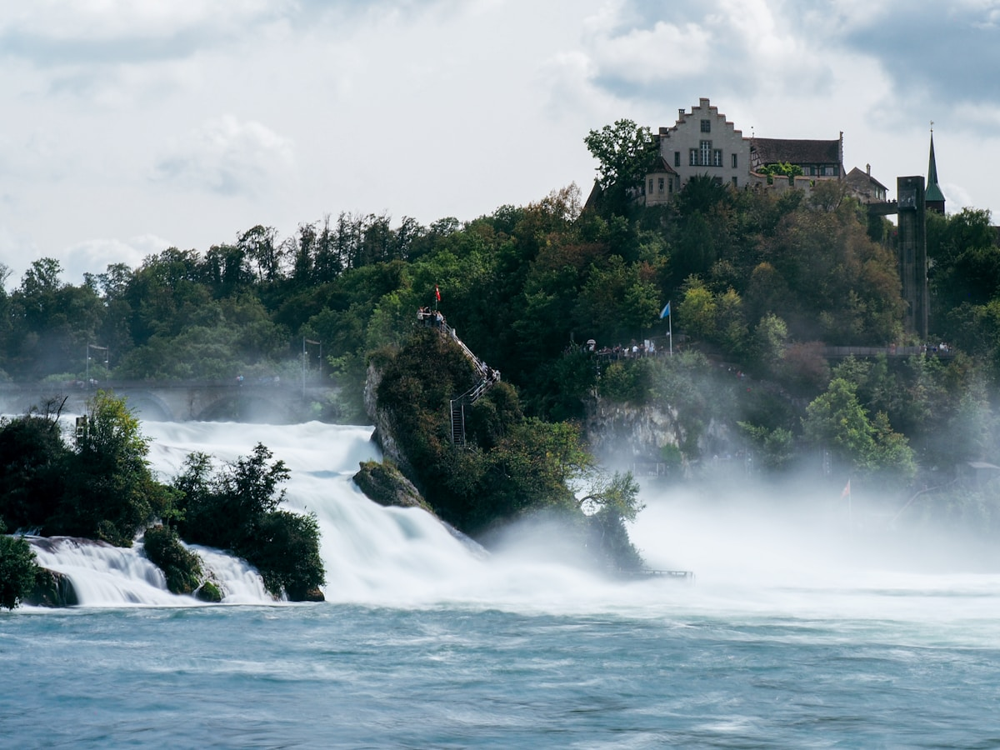
12. St. Moritz
Overview: St. Moritz in the Engadin valley is one of the world's most famous Alpine resorts. It has hosted the Winter Olympics twice and offers exceptional skiing, hiking, and luxury experiences.
Top Attractions: Lake St. Moritz, Corviglia ski area, Piz Nair, Engadin Museum, Segantini Hut.
Best Time to Visit: December-March for skiing; June-September for hiking.
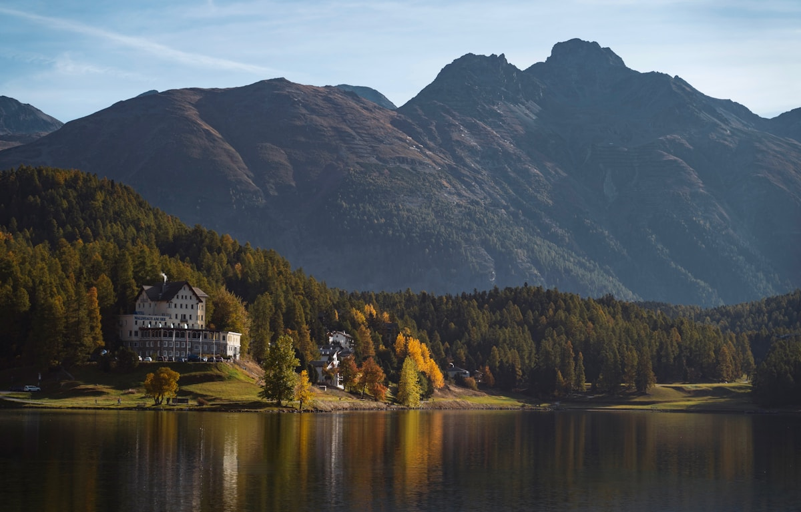
13. Lugano
Overview: Lugano is the largest city in the Italian-speaking Ticino region. It offers Mediterranean charm with Swiss efficiency, set on the shores of Lake Lugano surrounded by mountains.
Top Attractions: Lake Lugano promenade, Monte Brè, Monte San Salvatore, Lugano Old Town, Swiss Miniatur.
Entry Fees: Monte Brè funicular: CHF 35. Swiss Miniatur: CHF 19.
Best Time to Visit: April-October for warm weather and lake activities.
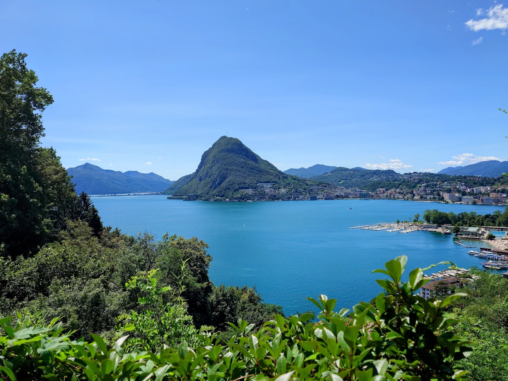
14. Basel
Overview: Basel is Switzerland's third-largest city, located on the Rhine River at the intersection of Switzerland, Germany, and France. It is a major cultural center with over 40 museums.
Top Attractions: Basel Munster cathedral, Kunstmuseum Basel, Rhine River cruise, Basel Zoo, Old Town.
Entry Fees: Kunstmuseum: CHF 16. Basel Zoo: CHF 21.
Best Time to Visit: May-September for Rhine swimming; June for Art Basel.
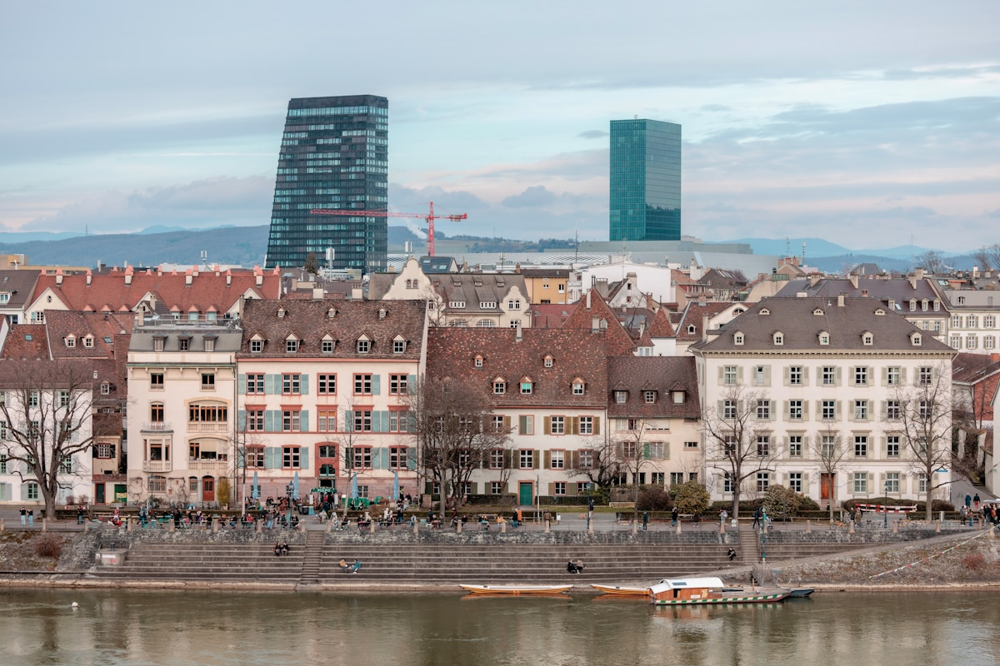